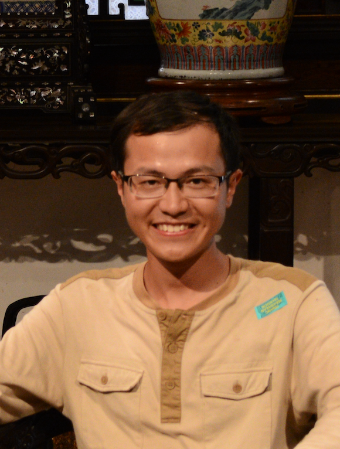

|  | An-Bao Xu |
An-Bao Xu received the M.S. degree in computational mathematics from the Gulin University of Electronic Technology, Gulin, China, in 2013, and the Ph.D. degree from Hunan University, Changsha, China, in 2017. From 2014 to 2016, he was an exchange Ph.D. student in Department of Mathematics and Statistics, Auburn University. He is currently a Lecturer with the College of Mathematics and Physics, Wenzhou University. His main research activities are focused on the application of numerical linear algebra and sparse optimization in image processing.
Ph.D., Computational Mathematics, Hunan University, China (2017),
M. Sc., Computational Mathematics, Guilin University of Electronic Technology, China (2013),
B. Sc., Mathematics, Hubei University of Science and Technology, China (2010).
Visiting student, Institute of Atmospheric Physics, Chinese Academy of Sciences (2016.11-2017.05),
Exchange Ph.D. student, Mathematics, Auburn University, USA (2014.08-2016.08),
-This visit is supported by a grant of the China Scholarship Council.
An-Bao Xu, Dongxiu Xie, Low-rank approximation pursuit for matrix completion, Mechanical Systems and Signal Processing, vol. 95, pp. 77-89, 2017.
Dongxiu Xie, An-Bao Xu, Zhen-yun Peng, Least-squares symmetric solution to the matrix equation AXB = C with the norm inequality constraint, International Journal of Computer Mathematics,vol. 93, no. 9, pp. 1564-1578, 2016.
An-Bao Xu, Zhen-yun Peng, Norm-constrained least-squares solutions to the matrix equation AXB = C, Abstract and Applied Analysis, vol. 2013 (2013), 10 p., http:dx.doi.org10.11552013/781276. Frank Uhlig, An-Bao Xu, Iterative optimal solutions for solvable and unsolvable inhomogeneous linear matrix equations of Sylvester and Lyapunov type (Submitted).
Dongxiu Xie, Hugo J. Woerdeman, An-Bao Xu, Parametrized quasi-soft thresholding operator for compressed sensing and matrix completion. (submitted)
An-Bao Xu, Tensor completion via a low-rank approximation pursuit, April 2020,
The 8th International Conference on Matrix Analysis and Application (ICMAA 2019), University of Nevada, Reno, USA, July 15-18, 2019.
-Contributed Talk: Tensor completion via low-rank approximation pursuit.
2018 SIAM Conference on Applied Linear Algebra (SIAM-ALA18),Hong Kong Baptist University,Hong Kong, China,May 4-8,2018.
-Contributed Talk: Parametrized quasi-soft thresholding operator for compressed sensing and matrix completion.
2017 Workshop on Matrices and Operators (MAO), Changsha, Hunan, China, June 9-12, 2017.
-Contributed Talk: Varied Parametric Quasi-Soft Thresholding for Compressed Sensing.
2016 SIAM Conference on Imaging Science (SIAMIS16), Albuquerque, New Mexico, USA, May 23-26, 2016.
-Contributed Talk: Low-Rank Approximation Pursuit for Matrix and Tensor Completion.
-Travel Support from SIAM Student Travel Fund.
The 40th SIAM Southeastern Atlantic Section Conference (SIAM-SEAS), University of Georgia,Athens, Georgia, USA, March 12-13, 2016.
-Contributed Talk: Optimal Solutions for Solvable and Unsolvable Inhomogeneous Linear Matrix Equations of Generalized Sylvester Type.
{kind=link}